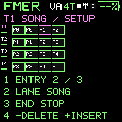

Play and create
Arrange a song
Four lanes on one clock, with repeat blocks, transposition and independent live overrides.
Hold SEL and press SEQ to open SONG and select four-track mode. Press SEQ in1V/6V to land on the single-lane SONG without changing mode; in4T, SONG follows MIXER. A long SEQ press returns to that mode's landing page. You can also page through SEQ to SONG. Each lane has up to32 entries drawn on a shared128-step timeline window. Each repeat is a separate block; block widths follow pattern duration. ALGORITHM chooses the lane. K1 or SELECT chooses entry1..32, automatically revealing its timeline window.
Write an arrangement
- Create patterns on STEP EDIT or RECORD. Assign each track an instrument in MIXER.
- On SONG, K1 selects an entry; K2 chooses P0..P15 or REST, K3 transposes-24..+24 semitones, K4 sets1..32 repeats. Editing an entry extends the lane length if necessary.
- Tap SEL to show lane setup. K2 selects LIVE or SONG, K3 selects STOP or LOOP at the end, and K4 counterclockwise deletes the selected entry or clockwise inserts a copy before it. A full lane refuses insertion.
- Tap SEL to return to entry editing. Press PLAY to start all tracks on the same clock. Different pattern lengths and repeat counts advance independently; they do not stretch each other.
- Save instruments first, then SAVE / PROJECT. Songs are project data and survive power-off. A sound-only save does not include the song.
Perform without losing the arrangement
A manual pattern queue in MIXER puts only that lane into LIVE at the pattern boundary; the saved song remains intact. Select SONG in lane setup to resume it from entry1 at the next bar. SEL+PLAY retriggers the selected lane; SEL+double PLAY retriggers all. Stop and fresh Start return enabled song lanes to entry1. Continue retains their position; MIDI Song Position seeks by actual pattern lengths and repeats.
Each entry caches its pattern, transpose and repeat count when entered: edits to the current entry take effect on its next visit, avoiding a mid-phrase jump. Existing pattern note edits remain live. Transposition never modifies the source pattern. Notes outside MIDI0..127 are silent rather than wrapped. REST lasts16 steps and emits no note. STOP at a lane end affects only that lane. Recording takes the selected lane into LIVE and retains the arrangement for later reuse.
Reading the view
Four horizontal lanes share the same time scale. Pink outlines identify the edited entry and all its repeats. White cursors show current playback within the displayed range. The selected entry controls the window; playback outside it continues normally. Very short patterns can produce narrow blocks; edit values remain visible below the timeline. Lane setup and entry editing share K1; ALGORITHM selects the lane in four-track mode; SINGLE uses lane 1.
One instrument, one lane
In SINGLE mode, Song edits and plays lane 1 only; the other three lanes remain saved for four-track use. Entering this page by cycling SEQ does not switch modes. SEL + SEQ remains an explicit shortcut into four-track Song.


